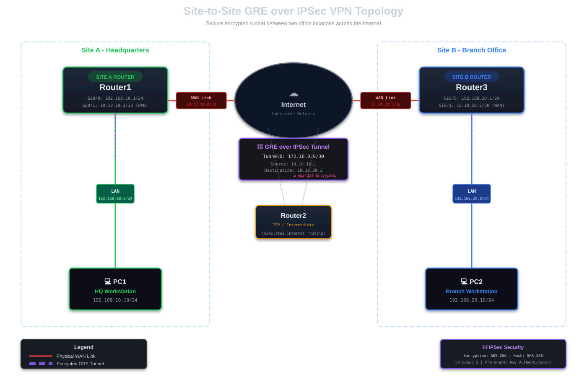

CISCO GRE and IPSec Tunnels
🔬 HANDS-ON LAB EXERCISE
This is an interactive lab guide! You'll build a secure site-to-site VPN tunnel step-by-step in GNS3. Each section includes the exact commands you need. By the end, you'll have an encrypted GRE tunnel connecting two offices across the Internet.
Generic Routing Encapsulation (GRE) is a tunneling protocol that creates a virtual point-to-point link between two routers across an IP network. GRE can encapsulate various network layer protocols, making it incredibly flexible for routing across networks. However, GRE alone doesn't provide encryption. By combining GRE with IPSec, we achieve both the flexibility of GRE tunneling and the security of IPSec encryption.
Real-World Scenario
SecureBank Multi-Site VPN
You're a network engineer at SecureBank. The company has two offices:
- Headquarters (Site A) - 192.168.10.0/24 - Houses the main database servers and financial systems
- Branch Office (Site B) - 192.168.20.0/24 - Remote staff need secure access to HQ resources
Both sites have Internet connections with static public IPs. You need to create a secure tunnel so branch employees can access headquarters systems safely. The connection must be encrypted to protect sensitive financial data.
Solution: GRE over IPSec tunnel providing encrypted site-to-site connectivity!
Lab Setup
📝 This is a hands-on lab guide! You'll need to build this topology in GNS3 as you follow along.
Required Equipment
- GNS3 as the network emulation software
- 3x CISCO routers IOSv 15.7+ (Router - Cisco Modelling Labs or equivalent)
- 2x Virtual PC simulators (VPCS in GNS3)
Topology Diagram
Build the following topology in your lab environment:

IP Addressing Scheme
📌 Site A (Headquarters)
- LAN: 192.168.10.0/24 (Router1 Gi0/0: 192.168.10.1)
- WAN: 10.10.10.0/30 (Router1 Gi0/1: 10.10.10.1)
- PC1: 192.168.10.10/24
📌 Site B (Branch Office)
- LAN: 192.168.20.0/24 (Router3 Gi0/0: 192.168.20.1)
- WAN: 10.10.20.0/30 (Router3 Gi0/1: 10.10.20.2)
- PC2: 192.168.20.10/24
🔗 GRE Tunnel
- Tunnel Network: 172.16.0.0/30
- Router1 Tunnel0: 172.16.0.1/30
- Router3 Tunnel0: 172.16.0.2/30
Initial Router Configuration
First, let's configure the basic IP addressing and hostnames on all routers. We'll set up Router2 as an intermediate router to simulate the Internet.
Router1 Basic Configuration (Site A)
Router> enable Router# configure terminal Router(config)# hostname Router1 Router1(config)# Router1(config)# interface GigabitEthernet0/0 Router1(config-if)# description LAN - Site A Router1(config-if)# ip address 192.168.10.1 255.255.255.0 Router1(config-if)# no shutdown Router1(config-if)# exit Router1(config)# Router1(config)# interface GigabitEthernet0/1 Router1(config-if)# description WAN to Internet Router1(config-if)# ip address 10.10.10.1 255.255.255.252 Router1(config-if)# no shutdown Router1(config-if)# exit Router1(config)# end Router1# write memory
Router2 Configuration (ISP/Internet Simulator)
Router> enable Router# configure terminal Router(config)# hostname Router2 Router2(config)# Router2(config)# interface GigabitEthernet0/0 Router2(config-if)# description To Router1 Router2(config-if)# ip address 10.10.10.2 255.255.255.252 Router2(config-if)# no shutdown Router2(config-if)# exit Router2(config)# Router2(config)# interface GigabitEthernet0/1 Router2(config-if)# description To Router3 Router2(config-if)# ip address 10.10.20.1 255.255.255.252 Router2(config-if)# no shutdown Router2(config-if)# exit Router2(config)# Router2(config)# ip route 192.168.10.0 255.255.255.0 10.10.10.1 Router2(config)# ip route 192.168.20.0 255.255.255.0 10.10.20.2 Router2(config)# end Router2# write memory
Router3 Basic Configuration (Site B)
Router> enable Router# configure terminal Router(config)# hostname Router3 Router3(config)# Router3(config)# interface GigabitEthernet0/0 Router3(config-if)# description LAN - Site B Router3(config-if)# ip address 192.168.20.1 255.255.255.0 Router3(config-if)# no shutdown Router3(config-if)# exit Router3(config)# Router3(config)# interface GigabitEthernet0/1 Router3(config-if)# description WAN to Internet Router3(config-if)# ip address 10.10.20.2 255.255.255.252 Router3(config-if)# no shutdown Router3(config-if)# exit Router3(config)# end Router3# write memory
✅ Verify Connectivity: Test that Router1 can ping Router3's WAN interface before proceeding:
Router1# ping 10.10.20.2 Type escape sequence to abort. Sending 5, 100-byte ICMP Echos to 10.10.20.2, timeout is 2 seconds: !!!!! Success rate is 100 percent (5/5), round-trip min/avg/max = 1/1/2 ms
Creating the GRE Tunnel
Now we'll create the GRE tunnel interfaces on both routers. This creates a virtual point-to-point link.
Configure GRE Tunnel on Router1
Router1# configure terminal Router1(config)# interface Tunnel0 Router1(config-if)# description GRE Tunnel to Site B Router1(config-if)# ip address 172.16.0.1 255.255.255.252 Router1(config-if)# tunnel source GigabitEthernet0/1 Router1(config-if)# tunnel destination 10.10.20.2 Router1(config-if)# tunnel mode gre ip Router1(config-if)# no shutdown Router1(config-if)# exit Router1(config)# end Router1# write memory
Configure GRE Tunnel on Router3
Router3# configure terminal Router3(config)# interface Tunnel0 Router3(config-if)# description GRE Tunnel to Site A Router3(config-if)# ip address 172.16.0.2 255.255.255.252 Router3(config-if)# tunnel source GigabitEthernet0/1 Router3(config-if)# tunnel destination 10.10.10.1 Router3(config-if)# tunnel mode gre ip Router3(config-if)# no shutdown Router3(config-if)# exit Router3(config)# end Router3# write memory
✅ Verify the Tunnel: Ping across the tunnel to verify it's operational:
Router1# ping 172.16.0.2 Type escape sequence to abort. Sending 5, 100-byte ICMP Echos to 172.16.0.2, timeout is 2 seconds: !!!!! Success rate is 100 percent (5/5), round-trip min/avg/max = 1/2/3 ms ! Check tunnel status Router1# show interface tunnel 0 Tunnel0 is up, line protocol is up Hardware is Tunnel Description: GRE Tunnel to Site B Internet address is 172.16.0.1/30 MTU 17916 bytes, BW 100 Kbit/sec Tunnel source 10.10.10.1 (GigabitEthernet0/1), destination 10.10.20.2 Tunnel protocol/transport GRE/IP
Configuring Routing Over the Tunnel
With the tunnel established, we need to configure routing so that the LANs at each site can communicate through the tunnel.
Static Routes for Site-to-Site Communication
! On Router1 - Route to Site B LAN via tunnel Router1# configure terminal Router1(config)# ip route 192.168.20.0 255.255.255.0 Tunnel0 Router1(config)# end Router1# write memory ! On Router3 - Route to Site A LAN via tunnel Router3# configure terminal Router3(config)# ip route 192.168.10.0 255.255.255.0 Tunnel0 Router3(config)# end Router3# write memory
Configure PCs and Test Connectivity
Set up IP addresses on the PCs at each site:
PC IP Configuration
! PC1 at Site A PC1> ip 192.168.10.10 255.255.255.0 192.168.10.1 PC1> save ! PC2 at Site B PC2> ip 192.168.20.10 255.255.255.0 192.168.20.1 PC2> save
✅ Test End-to-End Connectivity: From PC1, ping PC2:
PC1> ping 192.168.20.10 84 bytes from 192.168.20.10 icmp_seq=1 ttl=62 time=3.245 ms 84 bytes from 192.168.20.10 icmp_seq=2 ttl=62 time=2.891 ms 84 bytes from 192.168.20.10 icmp_seq=3 ttl=62 time=2.764 ms 84 bytes from 192.168.20.10 icmp_seq=4 ttl=62 time=2.912 ms 84 bytes from 192.168.20.10 icmp_seq=5 ttl=62 time=2.823 ms
🎉 Success! The GRE tunnel is working! But wait - this traffic is NOT encrypted yet. Anyone sniffing the WAN link can see our data. Let's add IPSec encryption.
Adding IPSec Encryption
Now comes the important part - securing our GRE tunnel with IPSec. IPSec provides authentication and encryption for our tunnel traffic.
Understanding IPSec Components
IPSec configuration has three main parts:
- ISAKMP Policy (Phase 1): Establishes a secure management connection
- Transform Set (Phase 2): Defines encryption and hashing algorithms
- Crypto Map: Ties everything together and applies it to an interface
IPSec Configuration on Router1
Router1# configure terminal ! Step 1: Configure ISAKMP (IKE Phase 1) Router1(config)# crypto isakmp policy 10 Router1(config-isakmp)# encryption aes 256 Router1(config-isakmp)# hash sha256 Router1(config-isakmp)# authentication pre-share Router1(config-isakmp)# group 14 Router1(config-isakmp)# lifetime 86400 Router1(config-isakmp)# exit ! Step 2: Set pre-shared key Router1(config)# crypto isakmp key SecureBank2025! address 10.10.20.2 ! Step 3: Configure Transform Set (IKE Phase 2) Router1(config)# crypto ipsec transform-set GRE-TRANSFORM esp-aes 256 esp-sha256-hmac Router1(cfg-crypto-trans)# mode transport Router1(cfg-crypto-trans)# exit ! Step 4: Create Access List for GRE Traffic Router1(config)# access-list 100 permit gre host 10.10.10.1 host 10.10.20.2 ! Step 5: Create Crypto Map Router1(config)# crypto map SITE-TO-SITE 10 ipsec-isakmp Router1(config-crypto-map)# set peer 10.10.20.2 Router1(config-crypto-map)# set transform-set GRE-TRANSFORM Router1(config-crypto-map)# match address 100 Router1(config-crypto-map)# exit ! Step 6: Apply Crypto Map to WAN Interface Router1(config)# interface GigabitEthernet0/1 Router1(config-if)# crypto map SITE-TO-SITE Router1(config-if)# exit Router1(config)# end Router1# write memory
IPSec Configuration on Router3
Router3# configure terminal ! Step 1: Configure ISAKMP (IKE Phase 1) Router3(config)# crypto isakmp policy 10 Router3(config-isakmp)# encryption aes 256 Router3(config-isakmp)# hash sha256 Router3(config-isakmp)# authentication pre-share Router3(config-isakmp)# group 14 Router3(config-isakmp)# lifetime 86400 Router3(config-isakmp)# exit ! Step 2: Set pre-shared key (MUST MATCH Router1!) Router3(config)# crypto isakmp key SecureBank2025! address 10.10.10.1 ! Step 3: Configure Transform Set (IKE Phase 2) Router3(config)# crypto ipsec transform-set GRE-TRANSFORM esp-aes 256 esp-sha256-hmac Router3(cfg-crypto-trans)# mode transport Router3(cfg-crypto-trans)# exit ! Step 4: Create Access List for GRE Traffic Router3(config)# access-list 100 permit gre host 10.10.20.2 host 10.10.10.1 ! Step 5: Create Crypto Map Router3(config)# crypto map SITE-TO-SITE 10 ipsec-isakmp Router3(config-crypto-map)# set peer 10.10.10.1 Router3(config-crypto-map)# set transform-set GRE-TRANSFORM Router3(config-crypto-map)# match address 100 Router3(config-crypto-map)# exit ! Step 6: Apply Crypto Map to WAN Interface Router3(config)# interface GigabitEthernet0/1 Router3(config-if)# crypto map SITE-TO-SITE Router3(config-if)# exit Router3(config)# end Router3# write memory
⚠️ Important: The pre-shared key MUST be identical on both routers! Also, the ACLs are mirror images - note the source/destination reversal.
Verifying IPSec is Working
After configuration, send some traffic through the tunnel (ping from PC1 to PC2) to trigger the IPSec negotiation. Then verify:
Essential Verification Commands
! Check ISAKMP (Phase 1) Status
Router1# show crypto isakmp sa
IPv4 Crypto ISAKMP SA
dst src state conn-id status
10.10.10.1 10.10.20.2 QM_IDLE 1001 ACTIVE
! If state shows "QM_IDLE" and status "ACTIVE", Phase 1 is UP!
! Check IPSec (Phase 2) Status
Router1# show crypto ipsec sa
interface: GigabitEthernet0/1
Crypto map tag: SITE-TO-SITE, local addr 10.10.10.1
protected vrf: (none)
local ident (addr/mask/prot/port): (10.10.10.1/255.255.255.255/47/0)
remote ident (addr/mask/prot/port): (10.10.20.2/255.255.255.255/47/0)
current_peer 10.10.20.2 port 500
PERMIT, flags={origin_is_acl,}
#pkts encaps: 25, #pkts encrypt: 25, #pkts digest: 25
#pkts decaps: 25, #pkts decrypt: 25, #pkts verify: 25
! Look for non-zero encrypt/decrypt counters - this means encryption is working!
✅ Success Indicators:
- ISAKMP SA shows "ACTIVE" status
- IPSec SA shows non-zero encrypt and decrypt counters
- PCs can still ping each other (traffic is now encrypted!)
Final Testing
Let's verify everything is working end-to-end with encryption:
! From PC1, ping PC2 PC1> ping 192.168.20.10 84 bytes from 192.168.20.10 icmp_seq=1 ttl=62 time=4.124 ms 84 bytes from 192.168.20.10 icmp_seq=2 ttl=62 time=3.987 ms 84 bytes from 192.168.20.10 icmp_seq=3 ttl=62 time=3.845 ms ! Traceroute shows the tunnel hop PC1> trace 192.168.20.10 trace to 192.168.20.10, 8 hops max 1 192.168.10.1 1.234 ms 1.123 ms 1.056 ms 2 172.16.0.2 2.456 ms 2.389 ms 2.312 ms 3 192.168.20.10 3.678 ms 3.567 ms 3.489 ms
Notice hop 2 shows the tunnel IP (172.16.0.2) - this confirms traffic is going through the GRE tunnel!
Troubleshooting Tips
Problem: IPSec won't come up
- Check: Pre-shared keys match exactly (case-sensitive!)
- Check: Crypto parameters match (encryption, hashing, DH group)
- Check: ACLs are mirror images of each other
- Check: Peer IPs are reachable (ping WAN interfaces)
Debugging Commands
! Enable debugging (use carefully!) Router1# debug crypto isakmp Router1# debug crypto ipsec ! Clear existing SAs and retry Router1# clear crypto sa Router1# clear crypto isakmp ! Then send traffic to trigger negotiation PC1> ping 192.168.20.10
Problem: Tunnel is up but no connectivity
- Check: Static routes are configured correctly
- Check: Tunnel interfaces are up:
show ip interface brief | include Tunnel - Check: Can ping across tunnel:
ping 172.16.0.2
Problem: MTU issues / fragmentation
GRE adds 24 bytes, IPSec adds more overhead. If experiencing issues:
! Adjust MTU on tunnel interface Router1(config)# interface Tunnel0 Router1(config-if)# ip mtu 1400 Router1(config-if)# ip tcp adjust-mss 1360
Security Best Practices
- Strong Keys: Use complex pre-shared keys (or better, use PKI certificates)
- Modern Encryption: AES-256 with SHA-256 as shown here
- Lifetime Management: Shorter lifetimes (e.g., 3600s) for high-security environments
- Access Control: Use ACLs to restrict what can traverse the tunnel
- Monitoring: Regularly check SA status and encryption counters
- Keep Updated: Apply security patches to router IOS regularly
Summary
In this guide, we've covered:
- ✓ Understanding GRE tunneling and its benefits
- ✓ Creating point-to-point GRE tunnels between sites
- ✓ Configuring routing over GRE tunnels
- ✓ Securing GRE with IPSec encryption
- ✓ ISAKMP Phase 1 and IPSec Phase 2 configuration
- ✓ Verification and troubleshooting techniques
- ✓ Security best practices for production deployment
Real-World Applications: GRE over IPSec is commonly used for:
- Site-to-site VPNs connecting branch offices
- Secure WAN connections for multi-location businesses
- Encrypted tunnels for routing dynamic protocols (OSPF, EIGRP)
- Backup connectivity paths with encryption
Next Steps: Consider implementing dynamic routing (OSPF/EIGRP) over the tunnel for automatic failover and load balancing scenarios!